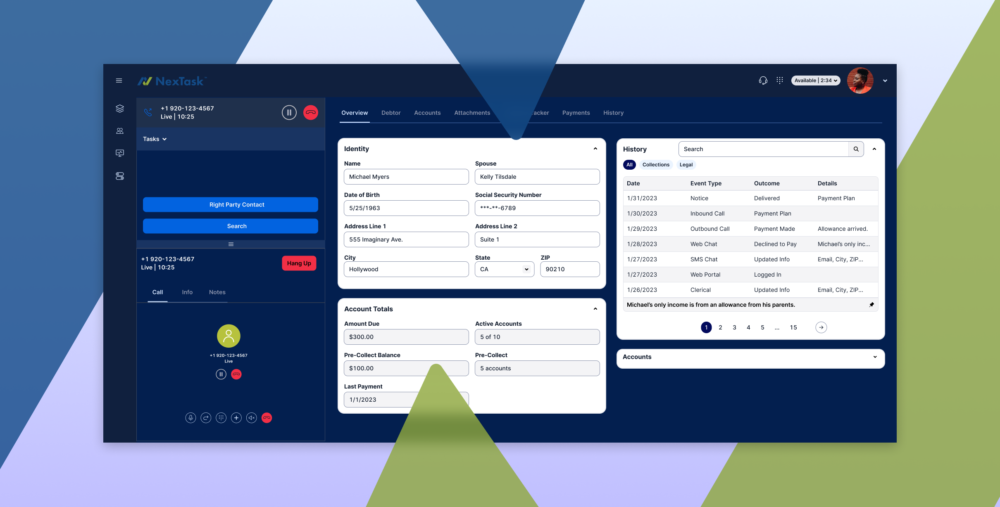
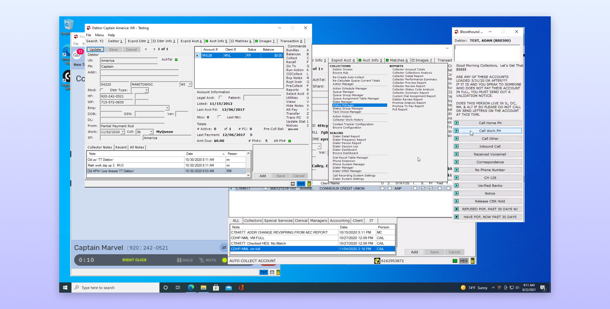
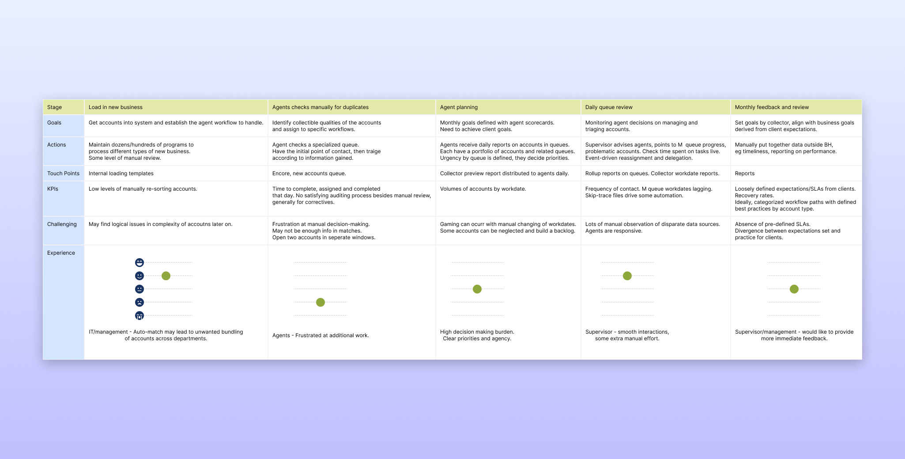
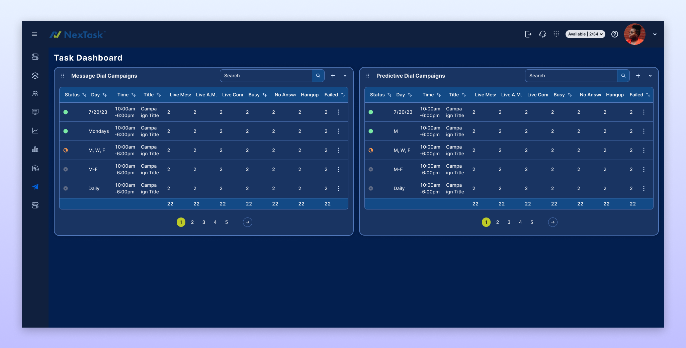
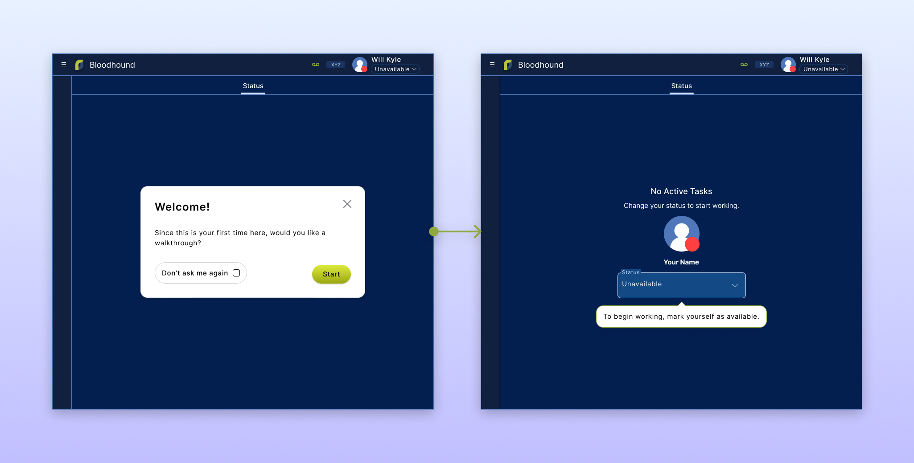
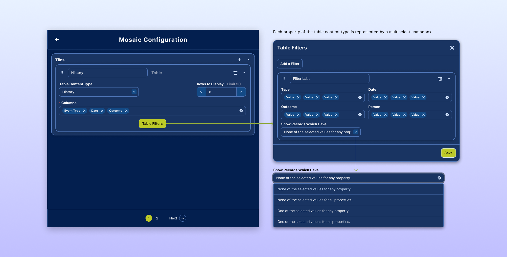

A suite of enterprise communications and accounts management products had not seen a redesign for 30 years. I led a design team to redesign the suite as a unified web-based platform.
I was hired during a historic period of transformation for Roydan Enterprises. The company has been building digital accounts receivable and communication tools for businesses since 1980. Roydan's suite of tools to support their customers has grown immensely over the years, but the information architecture and design language had not been changed since their first GUI was first introduced in 2002.
Roydan had traditionally had a relatively static market placement in the field of debt collections, serving a portfolio of long-term customers. They realized that software industries are quickly changing. They would need a more flexible and modern product offering to increase their sales both within their industry and beyond into new markets.
My design process began with research into the pain points people were experiencing with our existing product. I established lines of communication with executives and managers in our customer base who could help me coordinate direct user research. I observed agent and manager-level users of various expereince levels as they worked in real time. I then had time set aside to ask them structured interview questions about their experience with our product. These direct user observation and interviews provided countless subtle insights. I continued this practice into our alpha release to gain feedback on our new product.
Creating personas our of users to guide design was difficult, given that our customers had very different organizational structures from each other. Our product needed the flexibility to accommodate a variety of institutional workflows with different responsibilities given to various types of users. To solve this, I invited key stakeholders from each of our alpha customers to cooperative sessions where we created institutional journey maps. Rather than map the workflow of an individual user, we mapped the journey of an account as it was worked by all of the teams and user types in an entire organization. This was significantly more complex than mapping a user journey but it was essential to understand the unique ways that organizations were using our product.
The primary theme that I found with the users I interviewed is that they had to sift through too much irrelevant information in every part of their workflow. This came into sharp conflict with their primary goal, which was to minimize the time they spent on each account while speaking to consumers in real time. I redesigned the information architecture and user journeys so that information was in a predictable location and only on screen when it was most likely needed.
The UI elements presented to the user at any given time was determined by an intelligence engine evaluating the characteristics of their present task, but could also fluidly adapt to user intervention. I developed the logic which would evaluate the attributes of a task and determine which workflow will be presented to the end user.
The concept of reducing cognitive load on users by displaying only the most relevant information went hand-in-hand with the broader priority of accessibility. I believe that effort dedicated to accessibility tends to improve the experience for all users.
A key pain point for our new users was the time taken to learn memorize the complexity of our product. Besides restructuring our information architecture, we gave special attention to creating a easily digestible tutorial experience that could also be used to communicate new feature rollouts as well.
I created a color palette for the app based on the unique requirements of the users. The essential information about the consumer who is on the phone with the user needed to be read quickly. Empirical research shows that black text on a white background has the fastest comprehension. Users also needed UI for navigation and controls on screen. Yet users also reported experiencing eye fatigue from focusing on time-sensitive data on bright screens almost without pause for an entire work day. Here, research shows that dark mode themes reduce these symptoms. Our solution was a unique combination of a branded dark-mode color scheme for UI displaying context-independent elements and light mode components called "tiles" displaying a high volume of context-dependent text.
Our company experienced a persistent bottleneck in supporting ad hoc customizations for customers by adding or removing particular fields and buttons from particular screens. This divergence between customer code bases accumulated technical debt. Meanwhile, our product offering was too specific to our industry to present convincing value proposition for new markets.
With our new product, I dedicated just as much attention to configuration tools for managers as to the agent experience. The customization framework I developed was simple to learn, easy to navigate, yet offered comprehensive depth to build our existing workflows and more. We designed tools for API configuration to link the platform to external databases. The same framework was then presented to construct custom user-facing interfaces.
We measured key KPIs before and after the Alpha program. Average throughput of tasks in our MVP after user training was measured to be 5% faster. In real world conditions, users were spending less time navigating the UI and searching for relevant information. The rate of payments collected per total calls placed increased by 3%, demonstrating improved communication between agents and consumers while using only the MVP of the new product.
The KPI measurements could not measure the long term impact of the full product implementation, so we considered qualitative feedback more indicative of the product's future. Managers, executives, and agents from our customers consistently and proactively shared how impressed and excited they were to use our new product.
12 customers representing over 400 individual users joined our Alpha program. They paid additional fees to support the upgrade, earning us an expected revenue increase of 8% for FY2024. The new product has produced a partnership offer from a major software company, opening new markets to our company.